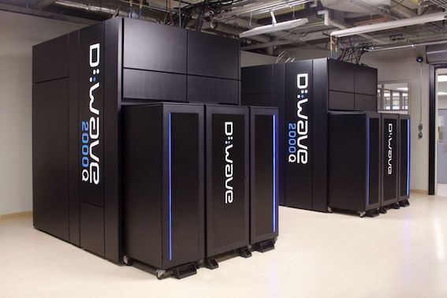

Basis for Quantum Cryptography
Qubit (Quantum bit)
A qubit is an object which can attain a state of quantum superposition between two states, for example:
- the up and down spin states of an electron
- the two orthogonal polarization states of a photon.
The state of a single qubit can be described by a two-dimensional column vector of complex numbers. The two states in which a qubit are measured are known as basis states, where any pair of vectors that are linearly independent could serve as a basis. These two quantum states correspond to the two states of a classical bit, namely 0 and 1.
Any quantum state vector can be written as a sum of these basis vectors, where only two out of infinitely many vectors correspond to states of classical bits.
Uncertainty Principle
Measuring a qubit collapses the quantum state to either one of the two classical states 0 or 1, i.e. the state of the qubit becomes one of the two basis vectors. Hence, a qubit can be thought to represent both states simultaneously.
One important aspect of the measurement process is that it alters the state of the quantum system: the effect of the measurement is that the new state is exactly the outcome of the measurement.
Only a qubit which is already in a basis state (like a classical bit) will be left unchanged after the measurement.
No-Cloning Theorem
After the measurement, the system is in the measured state. That is, further measurements will always yield the same value. [1.3]
As we can only extract one bit of information from the state of a qubit, it has been proved to be physically impossible to fully replicate the original qubit.[1.4]
Uses in Cryptography
Qubits can be used to transfer a key along a quantum communication channel. This key can then be used to encrypt data using a cipher, allowing data to be sent securely along classical channels of communication.
References
[1.1] E. Knill, R. Laflamme & G. J. Milburn. (2001). A scheme for efficient quantum computation with linear optics. Nature. 409, 46–52.
[1.2] http://www-inst.eecs.berkeley.edu/~cs191/sp12/notes/chap1&2.pdf
[1.3] https://www.cl.cam.ac.uk/teaching/0910/QuantComp/notes.pdf
[1.4] https://www.doc.ic.ac.uk/~herbert/teaching/QCA5P.pdf
Key Distribution (Transferring keys safely)
Entanglement based protocols : The quantum states of multiple separate objects can become linked together in such a way that they must be described by a combined quantum state, not as individual objects (known as entanglement) and performing a measurement on one object affects the other. [2.1] This property is used to guarantee a secure connection as intercepting either of the entangled pair of objects alters the overall system.
Prepare and measure protocols: The security of the protocol comes from encoding the information in non-orthogonal states. Quantum indeterminacy means that both of these states cannot be measured without disturbing the original state; this property can be exploited to detect eavesdropping and to determine the amount of information that has been intercepted.
BB84 protocol: Charles H. Bennett and Gilles Brassard (1984)
This protocol was designed to use photon polarization states to transmit data, but works with any two pairs of conjugate states, e.g. many optical fibre based implementations use phase encoded states.
The sender (Alice) and the receiver (Bob) are connected by a quantum communication channel (such as an optical fibre or free space) and a public classical channel (broadcast radio or the internet).
Step 1 (Generation of photons/key)
Alice creates a random bit (0 or 1) and then randomly selects one of two bases (say vertical/ horizontal or diagonal) to transmit it in. She then prepares a photon polarization state depending both on the bit value and basis, as shown below:

The sender (Alice) and the receiver (Bob) are connected by a quantum communication channel (such as an optical fibre or free space) and a public classical channel (broadcast radio or the internet).
Step 2 (Quantum transmission of photons/ key)
Alice then transmits a single photon in this state to Bob using the quantum channel. This process is repeated with new random bits, with Alice recording the state, basis and time of each photon sent.
Step 3 (Check validity of measurements)
As Bob does not know the basis the photons were encoded in, he selects a basis at random to measure in, for example using a horizontal/vertical polarizing filter.
If the photon was created as horizontal or vertical then this measures the correct state, but if it was created as diagonal then there is a 50-50 chance of returning either horizontal or vertical. Bob also records the time, measurement basis used and measurement result of each photon received.[2.2]
Bob and Alice then compare the basis in which Alice sent each photon with the basis Bob measured it in, discarding any which do not match to leave on average half the bits as a shared key.
Step 4 (Security/No cloning Theorem)
Alice and Bob then compare a predetermined subset of their remaining bit strings, aborting the key and trying again if over a certain number of bits differ, possibly with a different quantum channel.
An eavesdropper (Eve) must gain a copy of each photon for themself and pass an accurate copy on to Bob to avoid detection when Alice and Bob compare later.
However, this is impossible as the no cloning theorem guarantees that if a cloning device can copy the vertical/horizontal polarizations, it will fail to copy either of the diagonal polarizations.[2.3] Hence, to eavesdrop, Eve must introduce errors in Bob’s measurements, and the key will be aborted.
References
[2.1] Braunstein S.L., Pati A.K. (2003) Introduction to Entanglement-Based Protocols. In: Braunstein S.L., Pati A.K. (eds) Quantum Information with Continuous Variables. Springer, Dordrecht
[2.2] https://www.doc.ic.ac.uk/~herbert/teaching/QCA5P.pdf
[2.3] W. K. Wootters and W. H. Zurek, Phys. Today 62, 76 (2009).
Coin Flipping
Classical Coin Flipping
The concept of coin flipping was first introduced by Manuel Blum in 1981 as a classical cryptography primitive. Coin flipping is used when two parties do not trust each other (and there is not a reliable third party present to prevent cheating). E.g. Bob and Alice are divorced and live in different cities. They flip a coin over the phone to decide who will get the car. However, Bob is worried that if he tells Alice ‘heads’ say, Alice will lie and tell him that he lost regardless of what the outcome of the coin flip actually was.
Classical coin flipping is based on the assumption that completely secure one-way functions exist. As described by Blum in his research paper [1], such a function, f, should be "efficiently computable", have an inverse that cannot be computed easily, and "from a knowledge of f(x) one cannot have more than a 50-50 chance to guess efficiently if x has some non trivial property e.g. that it is even" [1]. Currently, however, we do not know if such a function exists and therefore, classical coin flipping is based off of normally, but not completely, secure one way functions or bit commitment schemes such as large prime factorisation (which is still used in cryptographic systems today).

A bit commitment scheme, which is also a cryptographic primitive, allows Alice to commit to a chosen bit whilst keeping all information about it hidden from Bob.
The bit cannot be changed after it has been committed, however, it can be revealed to Bob. All current classical cryptographic primitives are said to be computationally
secure because they rely on the assumption that the computational function used is hard to reverse. Information theoretic security, which is stronger than computationally
secure primitives, is "secure even against an all powerful cheating player, typically a player who can easily factor" [2].
Method as presented by Blum in his paper [1]:
- Alice and Bob agree on a completely secure one way function f.
- Alice selects an integer x unknown to Bob and sends him f(x).
- Bob guesses whether he thinks he is even or odd.
- Alice reveals whether he is wrong or right. She can send him the original x so that Bob can check using the function f to see whether Alice was lying or not.
In this way neither Bob nor Alice can cheat: Bob is completely guessing as he cannot determine anything from f(x) and Alice cannot send Bob the wrong number because if Bob uses f to compute the wrong value given to him by Alice, the resulting value of f(the number) would not be the same as the number initially sent by Alice in step 2). So in terms of coin flipping, replace the integer x and the properties even or odd with heads or tails. Alice flips the coin and sends Bob f(coin value). Bob makes a guess and tells Alice what he thinks the coin value is. Alice then reveals answer and Bob can check.
Quantum Coin Flipping
According to a research paper completed by C. Döscher and M. Keyl from the Braunschweig University of Technology, quantum mechanics does not provide a perfectly secure quantum coin tossing protocol, however, it does provide a significant security improvement over classical schemes [3].
Method as presented in wikipedia [4]:
- Alice chooses a random basis e.g. horizontally or diagonally and a random sequence of bits.
- Alice encodes her qubits using her chosen basis and sends these qubits as a sequence of polarized photons to Bob.
- Bob chooses a basis at random for each of the photons and records the reading he gets based on the basis he chose.
- Based on his table, Bob makes a guess as to which basis Alice used to encode the photons.
- Alice can confirm whether Bob was correct or not by sending Bob her original un-encoded sequence along with the basis that she used. Bob can check that Alice has not cheated by comparing his table with a table created from encoding the qubits with Alice’s basis.
In principle, by classical theories of probability, “if we understood exactly which physical processes determine the outcome of the flip and also know with enough precision all of the relevant parameters” [5] e.g. air resistance or force acting on the coin, then we could predict the outcome of a coin flip with certainty. Two physicists, Andreas Albrecht and Daniel Phillips counter this idea and argue that quantum fluctuations could “entirely account for the outcome of these everyday macroscopic events” [5]. In fact, they claim that “all successful applications of probability to describe nature can be traced to quantum origins” [6] and that quantum uncertainty can completely randomize the coin flipping. In this way, Albrecht and Phillips argue that coin flipping can be seen as similar to Schrodinger’s cat, where the quantum object in this case is a coin and it’s state is simultaneously heads and tails until the coin is looked at, at which point the coin takes on a definite value of either heads or tails.
In 2014 scientists at a joint research lab between Centre National de la Recherche Scientifique and Télécom ParisTech experimentally implemented a quantum coin flipping protocol based on a practical plug and play system, which is an enhanced commercial quantum key distribution device. The researchers claim that their approach "performs strictly better than [a classical protocol] over a distance suitable for communication over metropolitan area optical networks" [7]. In their published research paper titiled "Experimental plug and play quantum coin flipping", the researchers stated that previous coin flipping protocols required either a single-photon source, which is highly difficult to produce, or an entangled source, which is difficult to implement over long distances, in order to be secure. Their protocol does not use entangled states, therefore making their implementation much more "easily implementable with standard photonic sources" [8]. Anna Pappa, one of the researchers involved in the aforementioned experiment states that since both Alice and Bob want to win, they both try to cheat by using methods such as "increasing the average photons contained in the pulses" or by "exploiting the physical properties of the system ... like in the detection of the different [quantum] states" [8].
References
[1] Manuel Blum (1981): "Coin Flipping By Telephone" [online]. Available from: https://www.cs.cmu.edu/~mblum/research/pdf/coin/ [Accessed on: 13/03/2018]
[2] André Chailloux and Iordanis Kerenidis (2017): "Physical Limitations of Quantum Cryptographic Primitives or Optimal Bounds For Quantum Coin Flipping and Bit Commitment" [online]. Available from: https://epubs.siam.org/doi/pdf/10.1137/15M1010853 [Accessed on: 13/03/2018]
[3] C. Döscher and M.Keyl (2008): "An Introduction To Quantum Coin-Tossing" [online]. Available from: https://arxiv.org/pdf/quant-ph/0206088.pdf [Accessed on: 13/03/2018]
[4] Wikipedia (last edited 2017): "Quantum Coin Flipping" [online]. Available from: https://en.wikipedia.org/wiki/Quantum_coin_flipping [Accessed on: 13/03/2018]
[5] Edwin Cartlidge (2013): "The quantum coin toss" [online]. Available from: https://physicsworld.com/a/the-quantum-coin-toss/ [Accessed on: 13/03/2018]
[6] Jennifer Ouellette (2013): "Why Every Coin Flip May Be a Schrödinger's Cat" [online]. Available from: http://nautil.us/blog/why-every-coin-flip-may-be-a-schrdingers-cat [Accessed on: 13/03/2018]
[7] Stuart Mason Dambrot (2014): "Heads or tails: Experimental quantum coin flipping cryptography performs better than classical protocols" [online]. Available from: https://phys.org/news/2014-05-tails-experimental-quantum-coin-flipping.html [Accessed on: 13/03/2018]
[8] Anna Pappa (2014): "Experimental Plug and Play Quantum Coin Flipping" [online]. Available from: https://www.nature.com/articles/ncomms4717 [Accessed on: 13/03/2018]
Post-quantum cryptography
Several companies across the world have already built machines capable of quantum computation. A Canadian company, D-Wave Systems, became the first company in the world to sell a quantum computer when they announced the D-Wave One, a 16-qubit quantum computer, in 2011. Since then they have released multiple iterations of the product, the most recent being the D-Wave 2000Q[4.1], containing 2000 qubits. The quantum computer found its first customer in Temporal Defense Systems, a cybersecurity firm based in Washington, USA. IBM and Google have also announced interest at exploring quantum machinery, with Google having recently announced the Bristlecone[4.2], a newly-developed 72-qubit quantum microprocessor. In a blog post they justified it as a proof-of-principle piece of technology for building larger quantum computers in the future.

The D-Wave 2000Q[4.1]
One very significant quantum algorithm, known as Shor’s algorithm, provides a way to factorize large numbers in polynomial-time (i.e. fairly quickly) by manipulating the properties of quantum computation. Methods of encryption such as RSA and ECC (elliptic curve cryptography) rely on the fact that factorizing large numbers is an exponential-time problem (i.e. takes a very long time), so using Shor’s algorithm in practice would completely disrupt the RSA system. Pre-Shor’s algorithm methods for factorizing primes take around \(2 ^ {f(n)}\) operations (where \(n\) is the ‘modulus’, a specific number used in calculating RSA keys, and \(f(n)\) is some function of \(n\)). Shor’s algorithm takes around \((\log n) ^ {f(n)}\) operations, much faster than any other process[4.3].
However, there is still hope. There are several methods of cryptography that, although could be weakened by quantum computation in the future, have been categorized as quantum-safe for now. Some of the main ones are the McEliece system, lattice-based cryptography, and NTRU (a variant of lattice-based crypto). Other examples include multivariate cryptography, symmetric encryptions such as AES, and hash functions like SHA-256.
Current security status of several cryptosystems[4.3]
The McEliece system was invented in 1978[4.4] by Robert McEliece, a mathematician at Caltech. The algorithm uses a structure called a Goppa code, a type of error-correcting linear code, to generate the public key and private key. The algorithm proceeds as follows[4.5]:
The McEliece System
Generating keys
- The sender, Alice, chooses a binary \((n,k)\)-linear code \(C\) which can correct up to \(t\) errors. This code creates a a \( k\times n\) generator matrix \(G\) for the code \(C\), and should also have an efficient decoding algorithm.
- Alice chooses a random \(k\times k\) binary invertible matrix \(S\), and a random \( n\times n\) permutation matrix \(P\).
- Alice computes the \(k\times n\) matrix \({\hat {G}}=SGP\).
- Alice's private key is \((S,G,P)\) and her public key is \(({\hat {G}},t)\). Both are collections of matrices.
Encrypting plaintext
Say Alice's public key is \(({\hat {G}},t)\), and Bob wishes to send a message \(m\) to Alice:
- Bob encodes the message \(m\) as a binary string of length \(k\).
- Bob computes the vector \(c^{\prime }=m{\hat {G}}\).
- Bob chooses a random \(n\)-bit vector \(z\) containing exactly \(t\) 1s.
- Bob generates the ciphertext \(c=c^{\prime }+z\).
Decrypting plaintext
When Alice receives \(c\), she decrypts the message like so:
- Alice computes the inverse of \(P\) (i.e. \(P^{{-1}}\)).
- Alice computes \({\hat {c}}=cP^{-1}\)
- Alice uses the decoding algorithm for the code \(C\) to decode \({\hat {c}}\) to \({\hat {m}}\).
- Alice generates the original message \(m={\hat {m}}S^{-1}\).
Another quantum-safe system is lattice-based cryptography. A lattice is a set of all integer linear combinations of basis vectors in \(\mathbb{R}^n\), i.e. a set of \(n\)-dimensional coordinates. Cracking lattice cryptography involves solving the Shortest Vector Problem within a massive lattice, i.e. finding the shortest distance from the origin to a particular point \(P\) on the lattice (mathematically expressed as \(\min_{\rm v \in L} ||v||\), where \(v\) is any vector travelling from the origin to \(P\)). This is an NP-hard problem, even with quantum computers involved, and therefore this is quantum-safe. NTRU is an extension to lattice-based cryptography, developed in 1996, and it promises faster encryption and decryption than traditional public-key cryptography such as RSA. However since it is so new, it hasn’t been as thoroughly analysed against quantum attacks as other quantum-safe algorithms.
There are many different reasons to pick each quantum-safe algorithm. Size of generated keys, speed of encryption and ease of verifiability are all factors to take into account.
Advantages and disadvantages to various quantum-safe algorithms[4.6]
Unfortunately, many of these quantum-safe encryption methods are not currently in mainstream use. This is mainly due to key size; encryption methods such as the McEliece system usually have keys of more than a million bits, whereas RSA and ECC usually only have keys in the thousand bit range[4.3]. (Remember the keys for the McEliece system are a collection of large matrices, which could each easily have thousands of entries). The algorithms that have shorter keys also generally require more security analysis, and since quantum computers have not been made available to the general public, it is incredibly hard to verify whether these algorithms are indeed quantum-safe.
Quantum-unsafe encryption standards such as RSA will eventually need to be replaced by quantum-safe methods, in case of hackers getting hands on quantum computing power. It may be hard to convince banks and governments to change their systems proactively, however this is necessary in order to avoid a surprise attack by hackers. Various startup security companies now actively focus on protecting against potential attacks from quantum computers; two such companies are ISARA in Ontario, Canada, and PostQuantum in London.
ISARA’s flagship product, Radiate™, is advertised as a “high quality implementation...of quantum-safe algorithms and integration tools”[4.7]. Their system utilizes both the NTRU algorithm and the McEliece algorithm, as well as modified lattice-based encryption, and the company is currently in the process of getting their product certified as a cryptographic standard under the US government. ISARA is also involved in trying to create an international standard for quantum encryption, having recently submitted proposals to the widely used X.509 encryption standard that support quantum-safe encryption certificates[4.8].
PostQuantum is a security company that specifically acts on blockchain technology to make it quantum-safe[4.9] (the cryptographic hashing system in the blockchain is based off of ECC, which as mentioned earlier is vulnerable to attacks using quantum computers). Their reasoning is much the same as for ISARA; they predict quantum computers will come into mainstream use within the next 10-20 years, and that current technology must be protected in advance in case of a surprise attack. The following is their predicted timeline for the quantum-computing industry:
PostQuantum's predictions for the future of quantum computing[4.9]
Even though quantum-safe algorithms may have drawbacks, it is important that research is focused on improving them and protecting them for the future. It is also essential that banks, governments and large companies start implementing quantum-safe encryption into their infrastructure, to protect against the day that malicious hackers get access to quantum computing power.
References
[4.1] D-Wave Systems, Inc. "D-Wave Announces D-Wave 2000Q Quantum Computer...". Accessed 13/03/18. https://www.dwavesys.com/press-releases/d-wave%C2%A0announces%C2%A0d-wave-2000q-quantum-computer-and-first-system-order
[4.2] Google LLC. "A Preview of Bristlecone, Google’s New Quantum Processor". Accessed 13/03/18. https://research.googleblog.com/2018/03/a-preview-of-bristlecone-googles-new.html
[4.3] Sendrier, N. "Code-based Cryptography". Feb 2009. ISBN: 978-3-540-88701-0.
[4.4] McEliece, R. J. "A Public-Key Cryptosystem Based On Algebraic Coding Theory". 1978.
[4.5] University of Colorado Denver. "M5410 - The McEliece Cryptosystem". Accessed 13/03/18. http://www-math.ucdenver.edu/~wcherowi/courses/m5410/ctcmcel.html
[4.6] Bernstein, D. & Lange, T. "Post-quantum cryptography". Nature. 2017. Accessed 13/03/18.
[4.7] ISARA. "ISARA Radiate". Accessed 13/03/18. https://www.isara.com/isara-radiate/.
[4.8] ISARA. "ISARA Sets New International Standard For Quantum-Safe Security". Accessed 13/03/18. https://www.isara.com/isara-sets-new-international-standard-quantum-safe-security/
[4.9] PostQuantum. Accessed 13/03/18. https://www.post-quantum.com/
Glossary
Binary matrix: a matrix with all entries either 1 or 0.
Blockchain: a collection of data organized into chained blocks, with each block marked with a timestamp and a hash of the last block. Often used for ledger systems, e.g. for storing cryptocurrency transactions.
Cryptographic primitive: Well-established cryptographic algorithms that are used to build cryptosystems.
Error-correcting code: A code whereby the receiver can check for errors in transmission without the sender having to retransmit the code.
Exponential-time: a class of algorithms in which the time complexity of operation is an exponential function of the size of the inputs.
Linear code: an error-correcting codeword in which any linear combination of codewords is also a codeword.
Permutation matrix: a matrix obtained by permuting the rows of an identity matrix.
Polynomial-time: a class of algorithms in which the time complexity of operation is a polynomial function of the size of the inputs.